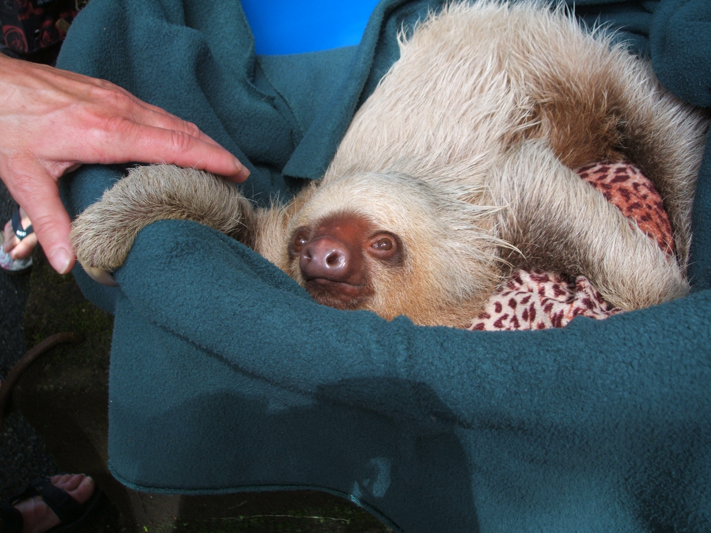
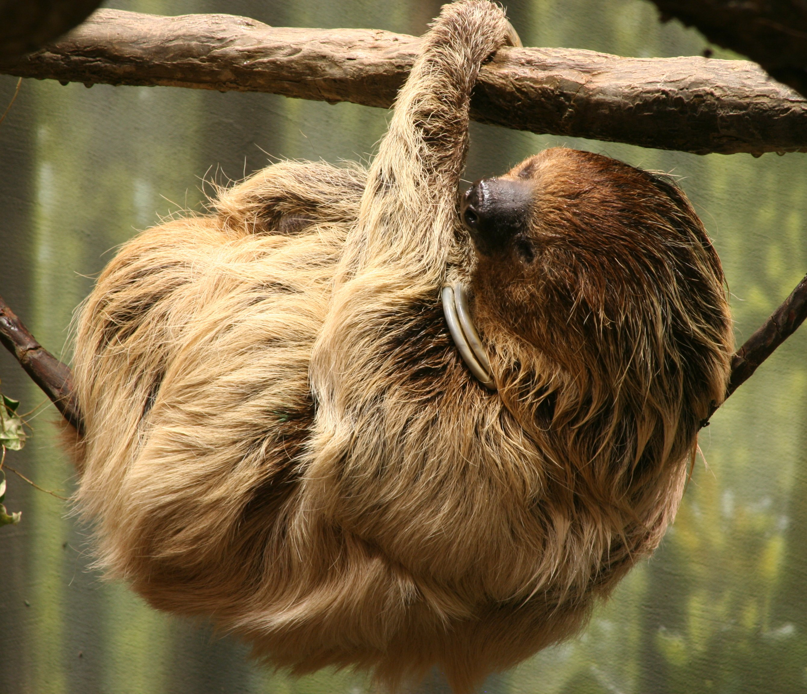
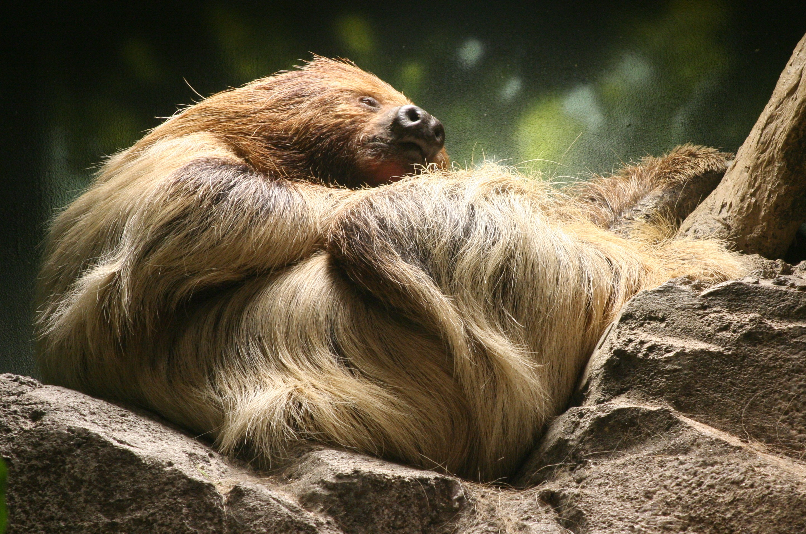
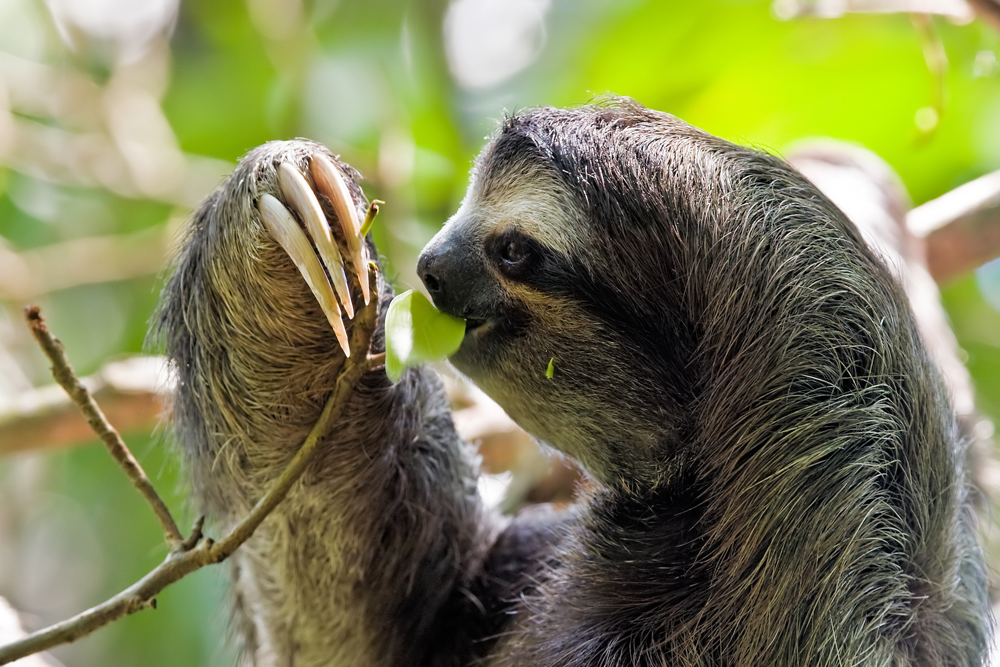
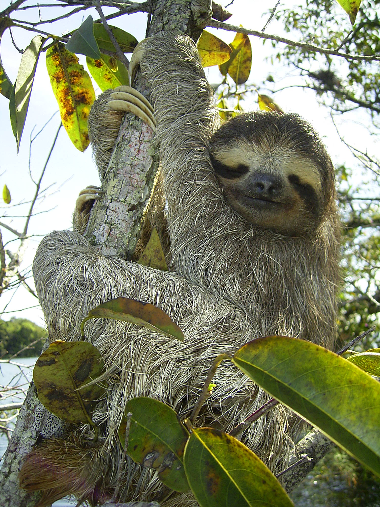

Hoffmann's two-toed sloth
Hoffmann's two-toed sloth (Choloepus hoffmanni) is a species of sloth from Central and South America.
It is a solitary, largely nocturnal and arboreal animal, found in mature and secondary rainforests and deciduous forests. The common name commemorates the German naturalist Karl Hoffmann.



Linnaeus's two-toed sloth
Linnaeus's two-toed sloth (Choloepus didactylus), also known as the southern two-toed sloth, unau, or Linne's two-toed sloth is a species of sloth from South America, found in Venezuela, the Guyanas, Colombia, Ecuador, Peru, and Brazil north of the Amazon River. There is now evidence suggesting the species's range expands into Bolivia.


Brown-throated sloth
The brown-throated sloth (Bradypus variegatus) is a species of three-toed sloth found in the neotropical ecozone.
It is the most common of the four species of three-toed sloth, and is found in the forests of South and Central America.
